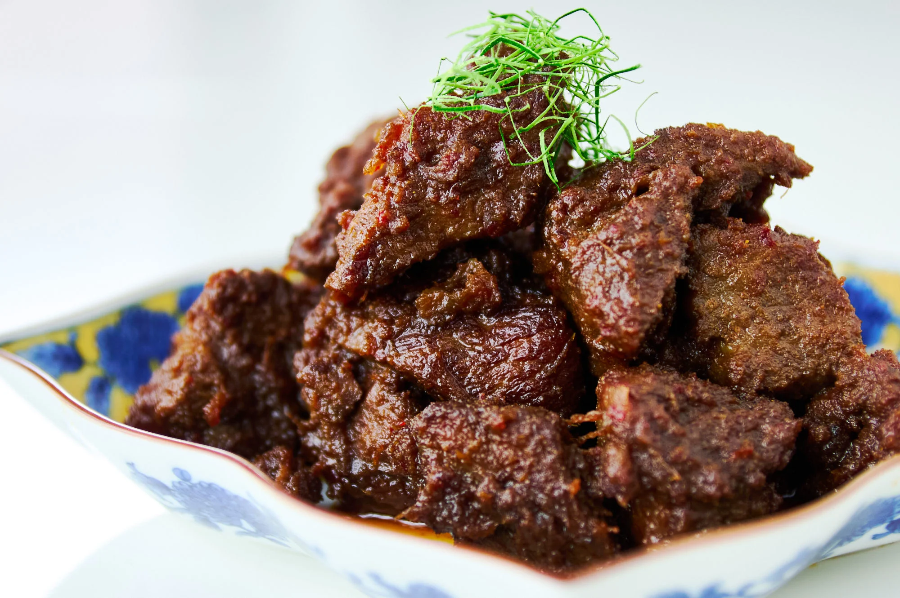

Rendang Sapi
Panduan Langkah Demi Langkah Khas Minangkabau
Rendang adalah mahakarya kuliner yang membutuhkan kesabaran. Daging sapi dimasak perlahan dalam santan dan bumbu kaya rempah hingga mengering sempurna. Proses memasak lambat adalah kunci keautentikan.
🥘 Bahan-Bahan
Bahan Utama
- 1 kg Daging Sapi (potongan rendang)
- 1 L Santan kental murni
- 500 ml Santan encer
Bumbu Halus
- 12 siung Bawang Merah
- 8 siung Bawang Putih
- 150 gr Cabai Merah keriting
- 2 cm Jahe
- 3 cm Kunyit bakar
- 5 cm Lengkuas muda
Bumbu Pelengkap (Cemplung)
- 3 batang Serai (memarkan)
- 5 lembar Daun Jeruk
- 3 lembar Daun Salam
- 1 lembar Daun Kunyit (simpulkan)
- 1 butir Asam Kandis
- Garam dan Gula secukupnya
⚙️ Langkah Pembuatan
- Persiapan Bumbu: Haluskan semua bahan bumbu halus hingga benar-benar lembut. Kualitas kehalusan bumbu sangat memengaruhi tekstur akhir rendang.
- Memasak Santan Awal (Gulai): Tuang santan encer ke dalam wajan besar. Masukkan bumbu halus dan semua bumbu pelengkap (serai, daun jeruk, dll.). Masak sambil diaduk perlahan hingga mendidih dan wangi.
- Memasukkan Daging: Masukkan potongan daging sapi. Besarkan api sedikit dan biarkan kuah menyusut hingga bumbu meresap ke daging.
- Penambahan Santan Kental: Setelah kuah menyusut dan berminyak, kecilkan api. Tambahkan santan kental, garam, dan gula.
- Tahap Kalio: Lanjutkan memasak dengan api kecil/sedang sambil sesekali diaduk. Kuah akan berubah menjadi kental dan berminyak (disebut Kalio). Daging sudah mulai empuk.
- Tahap Rendang Kering: Lanjutkan memasak dengan **api paling kecil**. Aduk lebih sering agar bagian bawah tidak gosong. Proses ini memakan waktu paling lama (4–8 jam total). Daging akan semakin empuk dan bumbu akan mengering menjadi *dedak* (serpihan bumbu).
- Selesai: Angkat rendang ketika bumbu sudah mengering sempurna, warnanya cokelat pekat, dan minyak rendang terlihat jernih. Sajikan.